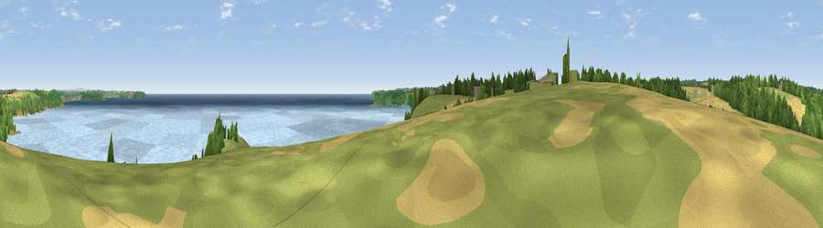

Viewpoint near Mawnan
#13787 in England · top 27% of its area beats it · near MawnanThe view, rendered

A 360° render of this exact spot computed from the terrain model, tree cover and land cover — summer colours, afternoon light, calibrated against photographs of famous viewpoints. Real trees, hedges and buildings will differ in detail.
The panorama
Grey silhouette: terrain skyline in each direction (720 bearings, Earth curvature and refraction included). Dashed green: skyline with trees (+15 m) and buildings (+8 m) as obstacles. Blue strip: how far the ground is visible on each bearing.
Where the view opens
Wedge length = distance to the farthest visible ground on that bearing (vegetation-aware). Rings at 10, 25 and 50 km.
What fills the view
72% water · 11% woodland · 10% grassland · 6% cropland ·
Angular shares of the visible panorama (visual magnitude), not map area. Landscape diversity 0.40 (0–1 Shannon).
Key numbers
More beautiful places nearby
The staircase of upgrades: each row has a higher view potential than everything closer. Driving times are estimates from straight-line distance, calibrated against real road routing — check an actual route before setting out.
| Place | Direction | Drive | Score |
|---|---|---|---|
| Viewpoint near Maenporth | N · 2 km | ~6 min | 64.2 |
| Viewpoint near St. Keverne | SSW · 5 km | ~11 min | 72.2 |
| Viewpoint near Porthoustock | SSE · 7 km | ~14 min | 74.0 |
| Viewpoint near Lanner | NNW · 15 km | ~26 min | 74.5 |
| Carn Brea | NW · 17 km | ~29 min | 81.1 |
| Viewpoint near Ashton | W · 19 km | ~32 min | 81.3 |
| Tregonning Hill | W · 19 km | ~33 min | 83.0 |
| St Agnes Beacon | NNW · 24 km | ~39 min | 86.1 |
50.11115, -5.08991 · source: screening · position refined by local search. Computed location — check access rights before visiting.